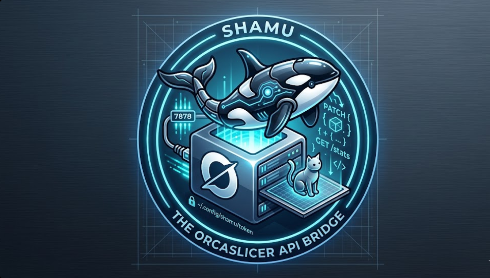

The OrcaSlicer API Bridge · localhost:7878
OrcaSlicer has no plugin API. Shamu fixes that — without forking or touching a line of C++. It watches OrcaSlicer's config files and wraps them in a clean HTTP + WebSocket API that any language can call. Build addons in Python, JavaScript, Rust — whatever you want.
OrcaSlicer stores all settings, profiles, and sliced G-code as plain JSON and text files on disk. Shamu watches those files and exposes them as a local API. Your addon never needs to know where OrcaSlicer keeps anything.
Detects profile changes and completed slices the instant OrcaSlicer writes to disk.
Auto-generated API token stored at ~/.config/shamu/token with chmod 600.
Runs alongside OrcaSlicer without modifying a single file in the slicer itself.
requires python 3.10+ · no system dependencies
Or from source:
$ git clone https://github.com/yourname/shamu $ cd shamu && pip install -e . [...] Successfully installed shamu-0.1.0
$ shamu [Shamu] Starting on http://127.0.0.1:7878 [Shamu] Token file: ~/.config/shamu/token [Shamu] API docs: http://127.0.0.1:7878/docs [Shamu] OrcaSlicer: ~/.config/OrcaSlicer [Shamu] Watching: ~/.config/OrcaSlicer
Open http://localhost:7878/docs for the interactive API explorer.
Health check. Public endpoint — no token required. Does not reveal settings or token.
{
"shamu": "ok",
"version": "0.1.0",
"orca_detected": true,
"connected_addons": 2
}
Returns the merged active profile (process + printer + filament) as a single flat JSON object.
curl http://localhost:7878/settings \
-H "X-Shamu-Token: $(cat ~/.config/shamu/token)"
{
"layer_height": 0.2,
"infill_density": 15,
"print_speed": 200,
"nozzle_temperature": 220,
// ... all active settings
}
Merge changes into the active process profile. OrcaSlicer picks them up on next slice. Keys must be snake_case identifiers — anything else is rejected.
curl -X PATCH http://localhost:7878/settings \ -H "X-Shamu-Token: $(cat ~/.config/shamu/token)" \ -H "Content-Type: application/json" \ -d '{"layer_height": 0.15, "infill_density": 20}'
List all available profiles by type. Returns both user-created and system profiles.
Load a specific profile. Valid types: process filament printer
Raw G-code from the most recent slice. Add ?lines=N to limit output.
Parsed stats from the latest G-code header — no need to scrape comments yourself.
{
"estimated_time_str": "1h 23m 10s",
"filament_used_g": 42.3,
"layer_count": 412,
"nozzle_temp": 220,
"bed_temp": 65,
"filament_type": "PLA",
"printer_model": "Bambu P1S"
}
Real-time event stream. Connect once, receive events as they happen. Pass token as query param.
.gcode file. Payload includes path and parsed stats.
PATCH /settings call. Payload includes the applied changes.
Any program that can make HTTP requests is a Shamu addon. Read the token from ~/.config/shamu/token and include it as X-Shamu-Token on every request.
import httpx from pathlib import Path token = Path("~/.config/shamu/token").expanduser().read_text().strip() headers = {"X-Shamu-Token": token} # Read current settings settings = httpx.get("http://localhost:7878/settings", headers=headers).json() print(f"Layer height: {settings['layer_height']}") # Apply changes httpx.patch("http://localhost:7878/settings", headers=headers, json={ "layer_height": 0.15, "print_speed": 150, })
const token = require('fs').readFileSync('~/.config/shamu/token', 'utf8').trim(); const h = { 'X-Shamu-Token': token }; // Get settings const settings = await fetch('http://localhost:7878/settings', { headers: h }).then(r => r.json()); // Listen for slice events const ws = new WebSocket(`ws://localhost:7878/events?token=${token}`); ws.onmessage = (e) => { const event = JSON.parse(e.data); if (event.event === 'slice_complete') console.log('Slice done!', event.stats); };
The addons/example_ai_addon/ directory ships a working Claude-powered settings advisor. Set ANTHROPIC_API_KEY and run:
$ pip install shamu[addon] $ python addons/example_ai_addon/addon_ai_advisor.py Connected to Shamu v0.1.0 What do you want to optimize? > reduce stringing with PETG Suggested changes (3 settings): retraction_length: 0.8 → 1.4 retraction_speed: 35 → 45 print_speed: 200 → 160 Apply? [y/N] y Applied. Re-slice in OrcaSlicer to see the effect.
Shamu is a local service — it only ever binds to 127.0.0.1 by default. Four hardening measures protect your settings from unauthorized access.
Every endpoint requires X-Shamu-Token. Generated with 256 bits of entropy, stored chmod 600.
Only null origin allowed — blocks malicious websites from silently calling your local API via browser fetch.
Profile name inputs are sanitized. Characters like ../ are stripped before any file lookup.
Token validation uses secrets.compare_digest() to prevent timing attacks on the auth header.
Shamu auto-detects the correct OrcaSlicer config directory per OS. Override with --config-dir /your/path.
| Flag | Default | Description |
|---|---|---|
--port | 7878 | Port to listen on |
--host | 127.0.0.1 | Bind address. Setting to 0.0.0.0 exposes to network — use with caution |
--config-dir | auto-detected | Path to OrcaSlicer config directory |
--show-token | — | Print the current API token and exit |
slice_complete, profile_changed, settings_changedPOST /slice — trigger a headless slice via OrcaSlicer CLI